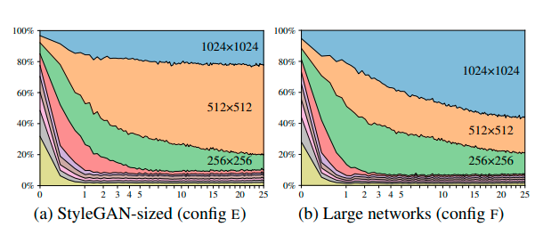

<!DOCTYPE html>
<html lang="en-US">
  <head>
    <meta charset="UTF-8">
    <meta http-equiv="X-UA-Compatible" content="IE=edge">
    <meta name="viewport" content="width=device-width, initial-scale=1">
    <title>GANs and classifiers</title>
    <link rel="preconnect" href="https://fonts.gstatic.com" crossorigin="crossorigin"/>
    <link rel="preload" as="style" href="https://fonts.googleapis.com/css2?family=Poppins:wght@600&amp;family=Roboto:wght@300;400;500;700&amp;display=swap"/>
    <link rel="stylesheet" href="https://fonts.googleapis.com/css2?family=Poppins:wght@600&amp;family=Roboto:wght@300;400;500;700&amp;display=swap" media="print" onload="this.media='all'"/>
    <noscript>
      <link rel="stylesheet" href="https://fonts.googleapis.com/css2?family=Poppins:wght@600&amp;family=Roboto:wght@300;400;500;700&amp;display=swap"/>
    </noscript>
    <link href="../css/font-awesome/css/all.min.css?ver=1.2.1" rel="stylesheet">
    <link href="../css/mdb.min.css?ver=1.2.1" rel="stylesheet">
    <link href="../css/aos.css?ver=1.2.1" rel="stylesheet">
    <link href="../css/main.css?ver=1.2.1" rel="stylesheet">
    <noscript>
      <style type="text/css">
        [data-aos] {
            opacity: 1 !important;
            transform: translate(0) scale(1) !important;
        }
      </style>
    </noscript>
  </head>
</html>

<header class="d-print-none">
  <div class="container text-center text-lg-left">
    <div class="pt-4 clearfix">
      <div class="site-nav"> 
        <nav role="navigation">
          <ul class="nav justify-content-center">
            <li class="nav-item"><a class="nav-link" href="#theory" title="Theory"><span class="menu-title">Theory in layman's terms</span></a>
            </li>
            <li class="nav-item"><a class="nav-link" href="#style" title="Architecture"><span class="menu-title">StyleGAN and its' Individual modules</span></a>
            </li>
            <li class="nav-item"><a class="nav-link" href="#style2" title="Architecture2"><span class="menu-title">StyleGAN2, minor changes</span></a>
            </li>
            <li class="nav-item"><a class="nav-link" href="#train_2" title="Training"><span class="Training and Hyperparameters"> Training on sparks dataset</span></a>
            </li>
            <li class="nav-item"><a class="nav-link" href="#ref" title="References"><span class="References"> References</span></a>
            </li>
          </ul>
        </nav>
      </div>
    </div>
  </div>
</header>

<div class="page-content">
  <div class="container">
      <div class="shadow-1-strong bg-white my-5 p-5" id="theory">
        <div class="theory-section">
        <h2 class="h2 fw-light mb-4"> <u>a. Theory in layman's terms: </u></h2>

        <b>What are GANs?</b><br>
        Generative Adversarial Networks, sounds like sort of a doomsday algorithm for destruction of computers (no pun intended). There's nothing to be afraid of as such. 
        The algorithm is more like an elegant application of neural networks in the field of image generation. Instead of getting too technical, we'll discuss it in a more simpler way with an example.<br>

        1. So consider there's an upcoming artist, who is very passionate about drawing sketches of human faces. Though she has commendable drawing talents, she still needs to improve and she's also aware of that fact.<br>
        2. Hence she finds a teacher who could guide her through the process of improving her sketching skills, and starts immediately.<br>
        <br>  
        3. So on the first day of training, the artist draws a sketch that looks something like the one as shown below:
        <br> 
        4. Teacher gives feedback on the image by saying, "See Salena, your drawing looks very vague, it lacks depth, try adding texture and shades to your sketches, by using right amount of sharp and blunt pencil strokes wherever needed." Salena listens to this information pretty much carefully and tries to apply it in her next sketch of the same entity.<br>
        5. Though she manages to somehow translate her teacher's feedback on to the sketch, but she still has to hit right chords. She persists and tries to effectively apply her teacher's advice on an everyday basis.<br>
        6. One fine day, she draws that sketch perfectly, and the teacher is so astonished by the results, that she has no feedback to give her.<br>
        <br>
        7. The whole process above is analogous to a process that happens in GANs. GAN has a teacher architecture called "the discriminator" and a student called "the generator". Generator, as the name suggets, generates images and the discriminator judges those images, sends an error signal to the generator from it's judgement. 
        Eventually making the generator an expert in whatsoever task it intends to perform in real time.<br><br>
        <br>

      </div>
    </div>

    <div class="shadow-1-strong bg-white my-5 p-5" id="style">
      <div class="style-section">
      <h2 class="h2 fw-light mb-4"> <u>b. StyleGAN and it's Individual modules </u></h2>

      There's lot of on-going research on GANs and its applications. Almost every GAN architecture follows this generator-discriminator structure, some of them try to improve the generator architecture and some try to improve the discriminator, so that it can effectively teach the generator to improve image quality. 
      Nevertheless, we'll be going to discuss the most popular GAN architecture called StyleGAN, that is created by Nvidia labs.<br><br>
      <h4 class="h4 fw-light mb-4"> 1. StyleGAN </h4>

      <p>Before going further, it's important to have a basic understanding of keywords like neural networks, probability distribution and statistics. 
        Because there would heavy usage of these terms in the below discussion, hence it is advised to have some knowledge on these technical terms.
        StyleGAN proposes major changes to the way of handling input data and generator architecture.</p>
      
    <b> a. Feature entanglement: </b><br>
     <p> The problem with traditional data handling is that, they suffer from feature entanglement issue i.e model tightly couples some features with another set of features present in the dataset's pixel distribution. 
      Let us undetsand this with an example, suppose there's a dataset of celebrity faces where most of the asian looking faces have short hairs, and rest of them have long hairs.
      Then, the generator will always generate images strictly with these settings only. Refer the table given below:</p>
      <table class="center_tab">
        <tr>
          <th> Sr.No </th>
          <th> Feature 1 </th>
          <th> Feature 2 </th>
          <th> Status </th>
        </tr>
        <tr>
          <td>1.</td>
          <td> Asian </td> 
          <td> Short Hairs </td>
          <td> Generates </td>
        </tr>
        <tr>
          <td>2.</td>
          <td> European </td>
          <td> Long Hairs </td>
          <td> Generates </td>
        </tr>
        <tr>
          <td>3.</td>
          <td> European </td>
          <td> Short Hairs </td>
          <td> Never Generates </td>
        </tr>
        <tr>
          <td>4.</td>
          <td> Asian </td>
          <td> Long Hairs </td>
          <td> Never Generates </td>
        </tr>
      </table><br>

      <p>StyleGAN disentangles these high level attributes(like face structure, i.e Asian, European or Indian) from stochastic variations(like short hair, blue eyes or sharp nose) using an <b>8-layered MLP structure</b>. The images are converted into latent codes, i.e. a compact representation of images.  A collection of latent codes is a latent space, we can think of this latent space as a human DNA. 
        As random permutation of a DNA creates a completely unique person, sampled out from a pool of DNAs, in the same way, latent code is sampled from the distrubution of each feature in the latent space. 
        This latent code goes through 8-layered mlp that disentagles each feature block, giving them their own uniques identity. But still, the paper claims that there is some degrees on entanglement since the standard datasets are based real world data.</p>
        <br>
    <b> b. Progressive Growth:</b>
    <p> A randomly generated 4 x 4 x 512  feature map is given to the actual generator, this generator first applies necessary operations on that feature-map and upsamples it's size by a factor of 2. This goes on increasing uptill a point, where the feature-map is of size 1024 x 1024 x 512. This process is called progressive growth, that helps in learning coarse features in the intial layers, and as the feature-map grows, it learns finer ones more efficiently.  </p>
    <br>
    
    <b> c. Adaptive Instance Normalization:</b>

    <p>This is rather a simple modification, so instead of using batch norm, StyleGAN uses instance norm, so the mean and variance are calculated from a single instance. 
    After normalizing the feature-maps, disentagled 512 dimensioned latent code goes through an affine transform module that gives out two vectors, namely ys, yb(<b>style vectors</b>). 
    Style vectors are the ones that decide long term features, or to be more precise, they decide the fundamenal structure of an image. The standard deviation of ys vector is multiplied with normalized instances and mean of  In short, the latent codes are applied on to the feature maps as such, the style applied on to the image is in control.</p><br>
    <br>
    
    <b> d. Noise:</b>
    <p>A scaled amount of single channeled random noise is added to the feature-maps before they go in to adaptive-instance normalization module. This promotes stochastic variations(blue eyes, curly hair or shining cheeks) without changing the overall features in the generated image.</p>

    The overall difference in the traditional GANs and StyleGAN is shown in the image below. The generator network is referred as the synthesis network in the paper.
    <br>

    <b> e. Style Mixing:</b>

    <p> Two differently generated random latent codes can be mixed together to get a heterogenous style based image. The latent codes are injected in different levels in the synthesis network, resulting a mixed image. </p>
    <br><br>

    <p>W1 and W2 are latent codes generated for individual images, but when these codes are mixed, an image would be formed that makes use of both styles.
       We'll call W1 as the source A and W2 as the source B. We can see coarser features like the skin tone, 
       glasses match source B and finer details like face structure, ears and nose shape match source A. 
       The more later the styles are mixed the more finer are the style applied. We see below how styles are affected when they are mixed at coarser and finer levels</p>

    <br>
    <div style="text-align: center"> 
      <a href="https://arxiv.org/abs/1812.04948"> Source:StyleGAN paper </a> 
    </div>


    <h4 class="h4 fw-light mb-4"> 2. Metrics </h4>

    <b> a. Perceptual Path Length: </b>
    <p>So to determine entanglement in the latent space interpolation method for a latent point(z), perceptual path length is calculated, that takes output of interpolation of two embeddings that is generated by the GAN from two different latent codes. 
    Two different perceptual path scores are defined, one for (z) latent code, and other one for (w) intermediate laten code.</p>
    <br>
    <div style="text-align: center"> 
      <a href="https://arxiv.org/abs/1812.04948"> Source:StyleGAN paper </a> 
    </div>
    <p>Where z1, z2 are two different latent codes, slerp is spherical interpolation, G being the generator output and Epsilon(E) being the a small subdivision and d(,) being the perceptual length. Same goes for intermediate latent codes, instead of slerp, lerp i.e. linear interpolation is used for their comparison.</p>
    <br>
    <div style="text-align: center"> 
      <a href="https://arxiv.org/abs/1812.04948"> Source:StyleGAN paper </a> 
    </div>
    <b> b. Linear seperability: </b>
    <p>1. To know whether the latent space is being effectively converted in to intermediate latent form or to be more precise, if it is heading in the right direction of variation, a metric called linear seperability is used.</p>
    <p>2. An auxillary pretrained network is fine tuned on 40 attributes that are present in the CELEBA-HQ dataset, each individual attribute is binary in nature(like has hair or bald, has blue or no). </p>
    <p>3. 200,000 images are generated using respective latent codes by the synthesis network, and for each image, confidence for every attribute is produced. Confidences below 0.5 are removed, resulting in 100,000 images at the end. </p>
    <p>4. An SVM(support vector machine) is fit through the latent codes of 100,000 images for all attributes, so when a new latent point(z) comes in, then the conditional entropy H(Y|X) is calculated, where X is the attribute score predicted by the SVM and the Y is the attribute score predicted by the fine tuned model.</p>
    <p>5. Lower value of the conditional entropy ensure consistent conversion to intermediate latent code. Exponential of the sum of conditional entropy is taken for all attribute, i.e. exp(sum-i(H(Yi|Xi), where i stands for individual attributes.</p>

      
  </div>
</div>  

<div class="shadow-1-strong bg-white my-5 p-5" id="style2">
  <div class="style2-section">
  <h2 class="h2 fw-light mb-4"> <u>c. StyleGAN2, minor changes:</u></h2>

  <h4 class="h4 fw-light mb-4"> <u>a. Random artifacts in StyleGAN1 image generation:</u></h4>

  <p>Due to adaptive instance normalization, relative information in feature map channels is lost, to cope up with that, the generator introduces a strong spike signal into the architecture after instance normalization. 
    Consequently a blob like structure is formed in the resultant image as shown below:</p>
  <br>
  <div style="text-align: center"> 
    <a href="https://arxiv.org/abs/1912.04958"> Source:StyleGAN2 paper </a> 
  </div>
  <p>Hence to tackle this problem some changes to the network architecture and the instance normalization part is completely replaced by weight modulation-demodulation concept.</p>
  <b>1. Synthesis Network:</b>
  <p>The affine transform of disentangled w<b>(intermediate latent code)</b> gives out ys,yb vectors, out of these two, addition of yb(bias) vector is done in the end of the style block along with addition of noise vector.</p>
  <b>2. Modulation and Demodulation of convolutional weights:</b>
  <p> One of the reasons to introduces this particular change is that style mixing .i.e feeding different w at diifferent layers, causes feature maps to intensify their magnitudes, that might fall out of proportion. 
  Hence to solve this issue, weights of convolution layers are modulated by multiplying ys<b>(scale vector given by affine transform)</b>, and then the output weights vector is divided by the square root of the sum of the squares of the each weight present in the weight vector.</p>
  <br>
  <div style="text-align: center"> 
    <a href="https://arxiv.org/abs/1912.04958"> Source:StyleGAN2 paper </a> 
  </div>
  Here, wijk denotes, weights for ith feature map that has j output features of height and width equal to k, si denotes ys(scale) for ith feature map. Then the values in conseuqent output weights vector(w') are squared, summed and square rooted.
  <br>
  <div style="text-align: center"> 
    <a href="https://arxiv.org/abs/1912.04958"> Source:StyleGAN2 paper </a> 
  </div>
  Finally, the (w') is divided by (w''), that dampens the intensifying nature of those weights, adds more subtlety in the image.
  <br>
  <div style="text-align: center"> 
    <a href="https://arxiv.org/abs/1912.04958"> Source:StyleGAN2 paper </a> 
  </div>
  Difference in the synthesis network of StyleGAN and StyleGAN2 is shown below:
  <br>

  The above mentioned changes are transformed on the image as shown below, they completely remove blob like artifacts from the image. 
  <br>

  <h4 class="h4 fw-light mb-4"> <u>b. Removal of strong location preference: </u></h4>

  <p> Progressive growth concept introduces strong location preference for some feature in the image, for example details like positioning of teeth and lips remain in the same place instead of shifting as per the alignment of the face. Refer the image beloww:</p>
  <br>
  <div style="text-align: center"> 
    <a href="https://arxiv.org/abs/1912.04958"> Source:StyleGAN2 paper </a> 
  </div>
  <p>The authors of the paper have identified that this shift invariance is caused to the fact that each resolution in progressive growth architecture are evaluated seperately, and hence details that have maximum frquency are repeated in the image. 
    So here they decided to completely discard progresiive growth concept and introduced resnet style skip connections. These connections are the addition of a convolution layer with its respective bilinear upsampled/downsampled feature maps, as shown in figure below:
  </p> 
    <br>
    <div style="text-align: center"> 
      <a href="https://arxiv.org/abs/1912.04958"> Source:StyleGAN2 paper </a>     
    </div>

  <p> With addition of skip connection layers, it was observed that 1024 x 1024 resolution had an higher contribution in the network outputs. Since finer details can be addressed more effectively in larger resolutions, problems like strong positioning can be neutralized easily. Below is the graph that shows contribution of each resolution in StyleGAN and StyleGAN with congfig F(with skip connections):  </p>
  <br>
  <div style="text-align: center"> 
    <a href="https://arxiv.org/abs/1912.04958"> Source:StyleGAN2 paper </a>
  </div><br><br>

  <h4 class="h4 fw-light mb-4"> <u>c. StyleGAN2-ADA: </u></h4>

  <p> This is an small addition to the StyleGAN2 training process, it does not change anything in the architecture, losses or metrics. 
    Instead it helps in training on limited  number of images. When there is less training data, discriminator model tends overfit and provides inherently meaningless signals to the generator architecture in StyleGAN. So when such cases occur, data augmentation is widely applied solution. 
    The paper proposes a data augmentation trick and an adaptive technique to apply those augmentations.</p>

  <b> 1. Non leaking augmentation trick: </b>
  <p> When a generator architecture is trained with real and augmented real data, then it tends to genrate images with augmentations along with normal ones. This phenomenon is called as leaking of augmentation in training sample distribution. Therefore to solve this issue, augmentations are applied to images once they are generated by the generator architecture, parallely real images applied with the same augmentation is given to discriminator architecture.
    Hence generator does not have to look at augmented images, but their corresponding loss helps in producing images with limited data. The pipeline is shown below:</p>

  <br>
  <div style="text-align: center"> 
    <a href="https://arxiv.org/pdf/2006.06676.pdf"> Source:StyleGAN2-ADA paper </a>
  </div><br>

  <p>The idea is simple, if the augmentation is invertible, that means, if there's a significant difference between the augmentated image and the actual image, then it might be useful. In the paper, authors give an example of setting input images to zeros most of the time, hence it's distinguished as seperate from the actual image. Therefore meaningful signal would be given out once the model loss is given over generated-then-augmented image and real-augmented image. 
  In settings where the uniform augmentations are applied like rotating or flipping the image, as these are more nuanced augmentations from GAN's context, these would render ineffective outputs by the generator, these types of augmentations are not invertible. But if the generator looks at conventional real images more frequently than others, then is strictly forced to match actual target distribution. 
  Most useful augmentations are pixel blitting, geometric, and color transforms, these augmentation were emprically obsereved to be useful. 
  </p>

  <b> 2. Adaptive Discriminator Augmentations: </b>

  <p> The probability of augmentations to be applied is decided by the equation given below:</p>
  <br>
  <div style="text-align: center"> 
    <a href="https://arxiv.org/pdf/2006.06676.pdf"> Source:StyleGAN2-ADA paper </a>
  </div><br>  
  D denotes discriminator outputs for respective images, E denotes error, closer the value of rv to zero, the lower is the overfitting in the model, and vice-versa for value closer to 1. So probability of application of augmentation depends on the value rv, when higher-overfitting/lower-overfitting is observed, p is incremented/decremented accordingly.

</div>
</div>

<div class="shadow-1-strong bg-white my-5 p-5" id="train_2">
  <div class="train_2-section">
  <h2 class="h2 fw-light mb-4"> <u>d. Training on sparks dataset:</u></h2>

  Using StyleGAN2-ADA, artificial sparks were generated. The dataset was manually download from google images, some of them can be referred below. The purpose behind choosing this particular sort of data was to check whether StyleGAN2-ADA can mimick the same randomness as sparks that are directionless and unstructured.
  <br>

  The model was trained for 200 kimgs, that means generator generated 200,000 images and discriminator classified those images as fake or real. The final outputs can be seen below:
  <br>

  The quality of images above is quite off, but still the model generated pretty commendable results. Hence it needs to be trained for some more time. 
  
  The entire jupyter notebook that could be executed on google colab can be downloaded from <a href="StyleGAN2_Experiments.html"> here </a>. It is advised to train StyleGAN2-ADA on atleast a single GPU.

</div>
</div>

<div class="shadow-1-strong bg-white my-5 p-5" id="ref">
  <div class="ref-section">
  <h2 class="h2 fw-light mb-4"> <u>e. References:</u></h2>
  
  1. StyleGAN1: <a href="https://arxiv.org/abs/1812.04948"> here </a> <br>
  2. StyleGAN2: <a href="https://arxiv.org/abs/1912.04958"> here </a> <br>
  3. StyleGAN2-ADA: <a href="https://arxiv.org/abs/2006.06676"> here </a> <br>
  4. What is a latent code: <a href="https://towardsdatascience.com/keywords-to-know-before-you-start-reading-papers-on-gans-8a08a665b40c?gi=1d483c20d4b9"> here </a> 
  
      </div>
    </div>
  </div>
</div>

<b>Note: Some of the concepts that are described in both StyleGAN or StyleGAN2 are not discussed here, mostly due to 2 reasons, 1) They're out of my understanding for now or, 2) I am trying to understand them more concretely, hence I may take some time to document. Open any feedback, please let me know if am conceptually wrong in the abovementioned concepts.</b>